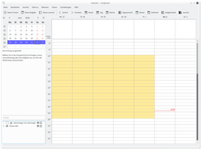
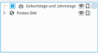
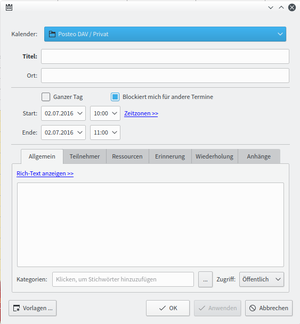

KOrganizer
Dieser Artikel wurde für die folgenden Ubuntu-Versionen getestet:
Ubuntu 16.04 Xenial Xerus
Ubuntu 14.04 Trusty Tahr
Zum Verständnis dieses Artikels sind folgende Seiten hilfreich:
KOrganizer  ist die Kalender- und Zeitmanagementanwendung von KDE und Teil der KDE-PIM-Suite Kontact. Es können mehrere Kalender angelegt, Geburtstage aus dem Adressbuch übernommen, sowie Termine, Aufgaben und Journale (eine Art Tagebucheintrag) angelegt werden. Zusätzlich ist eine Erinnerungsfunktion integriert. Für die Darstellung des Kalenders stehen eine Tages-, Wochen-, Arbeitswochen- (ohne Wochenende) oder Monatsansicht zur Verfügung.
ist die Kalender- und Zeitmanagementanwendung von KDE und Teil der KDE-PIM-Suite Kontact. Es können mehrere Kalender angelegt, Geburtstage aus dem Adressbuch übernommen, sowie Termine, Aufgaben und Journale (eine Art Tagebucheintrag) angelegt werden. Zusätzlich ist eine Erinnerungsfunktion integriert. Für die Darstellung des Kalenders stehen eine Tages-, Wochen-, Arbeitswochen- (ohne Wochenende) oder Monatsansicht zur Verfügung.
Dieser Artikel kann nur einen kleinen Einblick in die Funktionen von KOrganizer geben. Es werden lediglich die grundsätzlichen Einstellungen beschrieben, um mit diesem Programm arbeiten zu können.
|  |
| KOrganizer als alleinstehendes Programm |
Installation¶
KOrganizer ist bei einer Kubuntu Standardinstallation bereits enthalten und kann ansonsten über die Paketquellen installiert [1] werden:
korganizer
 mit apturl
mit apturl
Paketliste zum Kopieren:
sudo apt-get install korganizer
sudo aptitude install korganizer
Nach der Installation kann KOrganizer als alleinstehendes Programm über das Menü "Büroprogramme → Persönliche Daten organisieren (KOrganizer)" gestartet werden.
Integration in Kontact¶
Zur Verwendung von KOrganizer innerhalb von Kontact muss in der Regel keine extra Anpassung vorgenommen werden, da es automatisch integriert wird. Am linken Rand auf der Menüleiste von Kontact sollte standardmäßig die Schaltfläche "Kalender" vorhanden sein. Falls diese Schaltfläche fehlt, wurde das Kalendermodul deaktiviert. Zur Aktivierung des Moduls  im Menü auf "Einstellungen → Kontact einrichten ...". Dort muss man in der Baumansicht auf der linken Seite einen Haken vor den Punkt "Kalender" setzen.
im Menü auf "Einstellungen → Kontact einrichten ...". Dort muss man in der Baumansicht auf der linken Seite einen Haken vor den Punkt "Kalender" setzen.
Kalender¶
|  |
| Kalender anlegen |
Im Kalenderbereich werden alle erstellten Kalender, Kalender-Ressourcen genannt, angezeigt. Eintragungen in den Kalendern, die mit einem Häkchen versehen sind, werden im Fenster rechts angezeigt. Will man z.B. nur die Geburtstage angezeigt bekommen, so schaltet man die anderen Kalender einfach aus. Über einen Klick  in diesen Bereich öffnet sich ein Menü, über das neue Kalender erstellt, bearbeitet oder gelöscht werden.
in diesen Bereich öffnet sich ein Menü, über das neue Kalender erstellt, bearbeitet oder gelöscht werden.
DAV-Groupware-Ressource: Zugriff auf Kalender über CalDAV. Ein Assistent hilft bei der Einrichtung und einige Server werden automatisch unterstützt (bspw. ownCloud, eGroupWare oder Zarafa).
Geburtstage und Jahrestage: Sofern man für die Verwaltung seiner Kontakte Akonadi verwendet, können über dieses Modul die Geburts- und Jahrestage automatisch in den Kalender importiert werden.
ICal-Kalenderdatei/-ordner: Bei dieser Kalenderart werden alle Kalendereinträge in einer einzigen gemeinsamen lokalen Kalenderdatei bzw. in mehreren Dateien in einem gemeinsamen Ordner abgelegt. Unterstützt wird das Dateiformat iCalendar (*.ics). Dies funktioniert auch mit nicht-lokalen Kalendern. In diesem Fall kann einfach die iCal-URL in das Feld "Dateiname" eingegeben werden.
KDE-Kalender (herkömmlich): Lädt Daten aus einer herkömmlichen KDE-Kalender-Ressource. Es öffnet sich ein Assistent, der dabei hilft eine "alte" KDE-Ressource zum neuen Akonadi-System umzuwandeln.
Kolab Groupware-Server - Ermöglicht den Zugriff auf Kolab Groupware-Ordner auf einem speziellen IMAP-Server.
Open-Xchange-Groupware-Server - Hinzufügen einer Kalender-Ressource, die auf einem OpenXchange-Server liegt.
Zusätzlich besteht die Möglichkeit Google-Kalender und Daten von Facebook einzubinden.
Termine, Aufgaben und Journale¶
 Es gibt drei verschiedene Typen von Kalendereinträgen (Ereignis, Aufgabe und Journal). Ein Ereignis bzw. ein Termin ist eine Begebenheit, die zu einem festgelegten Zeitpunkt (Datum und Uhrzeit) stattfindet. Eine Aufgabe hingegen ist in einem bestimmten Zeitraum zu erledigen. Ein Journal ist ähnlich einem Tagebucheintrag. Diese Einträge unterscheiden sich in ihrer Darstellung im Kalender. Aufgaben sind durch das Symbol gekennzeichnet, Journale sind durch das Symbol markiert und Ereignisse bzw. Termine haben keine extra Kennzeichnung.
Es gibt drei verschiedene Typen von Kalendereinträgen (Ereignis, Aufgabe und Journal). Ein Ereignis bzw. ein Termin ist eine Begebenheit, die zu einem festgelegten Zeitpunkt (Datum und Uhrzeit) stattfindet. Eine Aufgabe hingegen ist in einem bestimmten Zeitraum zu erledigen. Ein Journal ist ähnlich einem Tagebucheintrag. Diese Einträge unterscheiden sich in ihrer Darstellung im Kalender. Aufgaben sind durch das Symbol gekennzeichnet, Journale sind durch das Symbol markiert und Ereignisse bzw. Termine haben keine extra Kennzeichnung.
Neuen Eintrag erstellen¶
|  |
| Neuer Termin |
Kalendereinträge werden über das Symbol in der Werkzeugleiste oder über das Kontextmenü ("Aktion → Neuer Termin", bzw. "Neue Aufgabe" oder "Neues Journal") des Kalenders hinzugefügt. Termine benötigen immer einen Titel und ein Datum, Aufgaben kommen dagegen auch ohne Datum aus. Termine und Journale benötigen immer einen Titel und ein Datum, Aufgaben kommen dagegen auch ohne Datum aus.
Teilnehmer¶
Für alle Kalendereinträge können Teilnehmer bestimmt werden. An diese kann direkt aus KOrganizer eine Einladung verschickt werden. Hierfür muss zuerst das dazugehörige Modul aktiviert werden. Hierzu wählt man im Menü "Einstellungen → Kalender einrichten ... → Gruppenplanung". Dort muss die Option "Groupware-Kommunikation verwenden" aktiviert sein.
Erinnerung¶
Termine und Aufgaben können mit einer automatischen Erinnerung versehen werden. Hierzu muss bei dem Kalendereintrag die Option "Erinnerung" hinzugefügt werden. Es kann angegeben werden wie viele Minuten, Stunden oder Tage man vor dem Ereignis daran erinnert werden möchte. Zusätzlich kann ein eigener Erinnerungstyp erstellt werden. Beispielsweise kann angepasst werden ob die Erinnerung vor oder nach Beginn des Ereignisses angezeigt werden soll, bzw. vor / nachdem des Ereignis beendet ist. Zusätzlich kann die Art der Benachrichtigung festgelegt werden (Text anzeigen, Audiodatei, Programm / Skript ausführen, E-Mail senden).
Achtung: Damit Erinnerungen ausgeführt werden, muss das Erinnerungsmodul (siehe unten) aktiv sein!
Wiederholung¶
Zusätzlich können bei Terminen und Aufgaben automatische und sehr komplexe Wiederholungen angegeben werden. Angenommen ein Abteilungstreffen findet jeden ersten Mittwoch im Monat statt. Man muss nicht jeden Termin einzeln erstellen, sondern erstellt ein neues Ereignis, fügt dort Titel, Zeit und alle weiteren gewünschten Informationen hinzu. Dann wählt man als Wiederholugstyp "Monatlich" und "am 1. Mittwoch". Falls nun aber einmal ein Abteilungstreffen ausnahmsweise nicht am ersten Mittwoch stattfindet sondern Freitags, kann man den automatisch erstellten Termin einfach verschieben. Hierzu wechselt man in der Kalenderansicht auf betreffenden Termin und zieht diesen von Mittwoch auf Freitag. Alle anderen automatisch erstellten Termine sind von dieser manuellen Änderung jedoch nicht betroffen.
KOrganizer-Erinnerungsmodul¶
KOrganizer verfügt über ein Erinnerungsmodul, das einen an Termin oder Aufgaben erinnert, sofern man dies in dem Kalendereintrag festgelegt hat. Nur falls dieses Modul aktiv ist, erscheinen die Erinnerungen! Befindet sich das Symbol im Systemabschnitt der Kontrollleiste, arbeitet das Modul.
Zum Aktivieren dieses Moduls man im Menü von Kontakt bzw. KOrganizer auf "Einstellungen → Kalender einrichten ...". Im linken Fensterteil wählt man "Allgemein" und im rechten Teil des Fensters auf den Reiter "Systemabschnitt der Kontrollleiste". Dort aktiviert man die Option "Erinnerungsmodul im Systembereich der Kontrollleiste anzeigen".
Achtung: Das Modul startet nun nur gemeinsam mit Kontact bzw. KOrganizer. Möchte man das Modul beim Systemstart automatisch, unabhängig von Kontact / KOrganizer aktivieren, auf das Symbol des Erinnerungsmodul im Systemabschnitt der Kontrollleiste und aktiviert die Option "Erinnerungsmodul bei der Anmeldung starten".
Kalender im- und exportieren¶
Kalender importieren¶
Möchte man einen iCalendar (*.ics) oder vCalendar (*.vcs) importieren, wählt man im Menü "Datei → Importieren → Kalender importieren ...". Nachdem man die gewünschte Kalenderdatei ausgewählt hat, wird man von KOrganizer vor die Wahl gestellt, ob die Kalendereinträge in einen vorhandenen Kalender kopiert werden sollen oder ob man die gewählte Datei als neue Kalender-Ressource in KOrganizer einbinden möchte.
Eine Vielzahl von verschiedenen iCalendar-Dateien zum Importieren, bspw. Feiertage, Ferien, Sportereignisse etc., werden auf diversen Webseiten zum Herunterladen angeboten. Eine Auswahl einiger interessanter Webseiten sind am Ende des Artikels unter den Links aufgelistet.
Falls man Kalender aus ical, einem populären aber schon etwas älterem UNIX Programm, importieren möchte, wählt man im Menü "Datei → Importieren → Aus einem UNIX Ical importieren". Diese Aktion liest die Datei .calendar aus dem Homeverzeichnis ein und kopiert die Daten in den aktuellen Kalender. Falls es hierbei zu Problemen kommen sollte, erscheint ein Hinweisfenster.
Direkter Import von store.kde.org¶
Über den Menüeintrag "Datei → Importieren → Neue Erweiterungen abholen ..." können Kalender von der Website store.kde.org direkt in KOrganizer importiert werden. In dem Auswahlfenster stehen Kalender zur Verfügung, die von KDE-Nutzern der Öffentlichkeit zur Verfügung gestellt wurden. Diese können nach verschiedenen Kriterien sortiert werden. Neben den kurzen Infotexten zu den angebotenen Kalendern, befinden sich Schaltflächen zum de- und installieren.
Kalender exportieren¶
Kalender und Aufgaben können als Webseite, iCalendar (*.ics) und vCalendar (*.vcs) exportiert werden. Diese Aktion ist im Menü unter "Datei → Exportieren" zu finden. Dabei ist zu beachten, dass immer alle Einträge der sichtbaren Kalender exportiert werden. Möchte man den Export auf bestimmte Kalender beschränken, muss man die Haken vor den entsprechenden Kalender-Ressourcen entfernen bzw. setzen. Bei dem Export als iCalendar oder vCalendar werden alle Termine, Aufgaben und Journaleinträge der sichtbaren Kalender gespeichert.
Bei dem Export als Webseite hat man verschiedene Auswahlmöglichkeiten wie die Kalendereinträge exportiert werden sollen. Beispielsweise kann man wählen, für welchen Zeitraum die Einträge exportiert werden sollen oder ob eine Termin- und Aufgabenliste erstellt werden soll. Journaleinträge werden nicht exportiert. Auch der Export als Webseite wird nur auf die sichtbaren Kalender angewandt.
KOrganizer konfigurieren¶
Über den Menüeintrag "Einstellungen → Kalender einrichten ..." kann KOrganizer konfiguriert werden. Beispielsweise können verschiedene Ansichtsmodi einzeln angepasst, Kalenderfarben geändert, und diverse Module de- und aktiviert werden. Die Einstellungsmöglichkeiten sind in der Regel selbsterklärend, deshalb wird hier auf eine detaillierte Beschreibung der einzelnen Optionen verzichtet.
Feiertage¶
KOrganizer kann die Feiertage vieler Länder automatisch im Kalender einblenden. Hierzu wählt man den Menüeintrag "Einstellungen → Kalender einrichten ...", dort wechselt man auf "Zeit und Datum" unter "Region für Feiertage" kann man das gewünschte Land auswählen.
Links¶
Extern¶
http://fux.zuhage.de/kategorie/kalender/Kalender
 - Feiertage und Ferien als Kalenderdateien
- Feiertage und Ferien als Kalenderdateien iCalShare
- Großes iCal-Verzeichnis Project 24
- Eine Sammlung dynamisch erstellter Kalender (bspw. Wetter, Sport- und Kulturveranstaltungen) vCalendar und iCalendar - Von KOrganizer unterstützte Kalenderdateiformate
- Erstellt mit Inyoka
-
 2004 – 2017 ubuntuusers.de • Einige Rechte vorbehalten
2004 – 2017 ubuntuusers.de • Einige Rechte vorbehalten
Lizenz • Kontakt • Datenschutz • Impressum • Serverstatus -
Serverhousing gespendet von